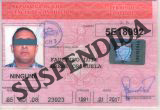

Exámen Teórico Nº 1
Pregunta 1
De las señales realizadas por el agente de la autoridad, con uno o ambos brazos extendidos como continuación de sus hombros significa:
Detenerse todos los usuarios de la vía de inmediato.
Los usuarios de la vía que se encuentran al lado izquierdo del agente pueden continuar en todas las direcciones y los peatones cruzarán por su espalda.
Que los usuarios que se encuentren al frente y espalda del agente deben detenerse, y los que se encuentran a sus extremos podrán circular.
Pregunta 2
Identifique la velocidad máxima en carretera para un vehículo de hasta 3500 Kg. ante la siguiente señal.
90 Km. /h.
60 Km. /h.
40 Km. /h.
Pregunta 3
¿Cuando se podrá cruzar la doble línea continua?
Siempre.
Nunca.
A veces.
Pregunta 4
¿De qué peligro nos advierte la siguiente señal?

De la existencia de un molino de viento.
Viento lateral.
De un lugar que sopla un viento muy fuerte.
Pregunta 5
¿Cuántos limpiaparabrisas debe tener un vehículo?
Dos limpiaparabrisas
Al menos, uno según la posición del conductor.
Todos los que sean necesarios.
Pregunta 6
Un conductor de un auto lada de uso personal, va circulando por la carretera a 90 Km./h, después al llegar a un restaurante se toma una cerveza en el almuerzo, más adelante, al continuar la marcha, adelanta a una motocicleta que transita a 90 Km./h.
¿Cuántas infracciones a cometido?
Dos infracciones.
Una infracción.
Tres infracciones.
Pregunta 7
Señale el parqueo hecho de forma correcta.

A más de 10 metros de una intercepción.
Entre una zona de seguridad y la vía.
A menos de 50 cm. de otro vehículo.
Pregunta 8
¿Cuántas de estas señales indican el sentido único de dirección?
Dos señales.
Una señal.
Tres señales.
Pregunta 9
Indique el nombre de la siguiente señal.

Acceso prohibido.
Señal de PARE
Prohibido pasar sin detenerse.
Pregunta 10
La señal realizada por un conductor de vehículo, con el brazo en posición inclinada hacia abajo, con la palma de la mano hacia atrás, significa:

Doblar a la izquierda.
Disminuir o parar.
Dar Marcha atrás.
Pregunta 11
¿Cuál es la obligación de todo conductor de vehículo al aproximarse a una señal de Ceda el Paso?
Ceder el paso a los vehículos que se aproximan por el lado derecho.
Disminuir la velocidad o parar si fuera necesario a fin de permitir el paso a los vehículos que se aproximan por la vía transversal.
Parar, mirar y seguir con precaución.
Pregunta 12
Indique cuando es que no esta permitido realizar un giro en forma de “u”.

Cuando exista una distancia de 150 mts anterior o posterior de una curva de visibilidad reducida.
En aquellos lugares, donde para efectuarla se vea obligado a retroceder.
Cuando las condiciones de la vía lo permitan.
Pregunta 13
¿Cuándo un vehículo no podrá circular por las vías del país?
Cuando la holgura del timón sea de 25º
Si los remolques de más de 1500 Kg. no tienen sistema de freno automático.
No se saltan las velocidades de la caja.
Pregunta 14
¿Cuándo los ciclos deben tener un claxon?

Siempre.
Nunca.
A veces.
Pregunta 15
¿Qué indica la luz amarilla del semáforo?
Disminuir la velocidad y seguir con precaución.
Parar a no ser que se encuentre muy cerca de ella.
Parar mirar y seguir.
Pregunta 16
¿En qué situación se podrá usar el claxon de noche en la carretera?
Para realizar una maniobra de adelantamiento.
En los cambios de rasante para anunciar su presencia.
Para evitar un accidente.
Pregunta 17
Cuando un conductor de un vehículo de carga realiza un estacionamiento forzoso por rotura de noche en la carretera utilizará.
Las luces de posición solamente.
Reflectorizante rojo, además las luces de estacionamientos ó de posición.
Bandera roja de 30 X 30 cm.
Pregunta 18
Las infracciones calificadas como muy peligrosas serán sancionadas con multas de:
40 pesos (8 Puntos).
60 pesos. (12 Puntos).
20 pesos. (6 Puntos).
Pregunta 19
Los titulares de licencia de conducción, que acumulen más de 36 Puntos en un año natural, serán sancionados con:
La suspensión de 6 meses hasta 1 año.
La suspensión de 1 mes hasta 3 meses.
Cancelación de la licencia de conducción de 1 a 3 años
Pregunta 20
La categoría de licencia que autoriza a conducir transporte colectivo de pasajeros con más de 8 asientos sin contar el del conductor es:
Sub-categoría D-1
Categoría D
Categoría E